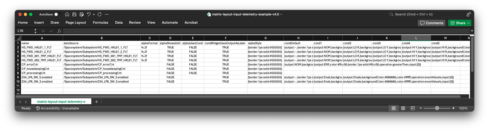
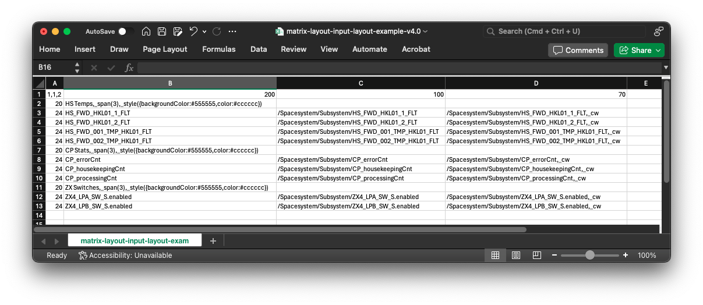
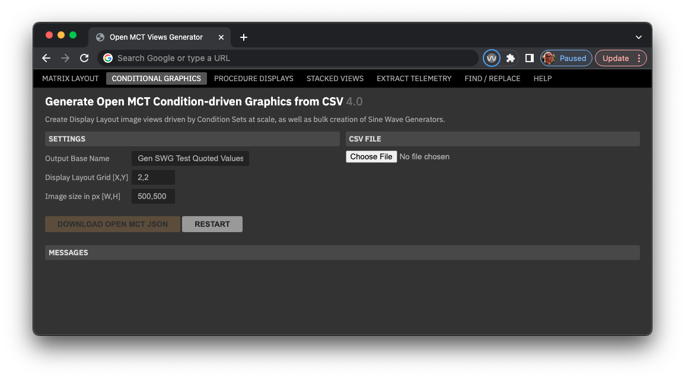
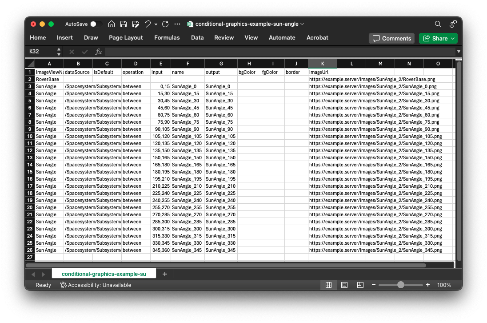
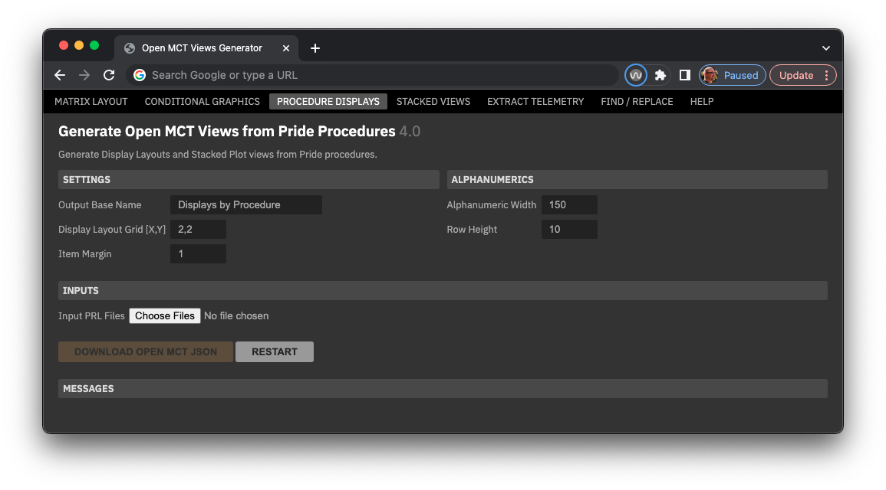
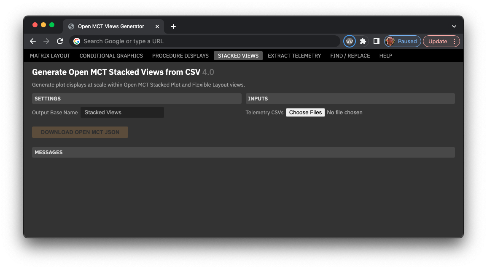
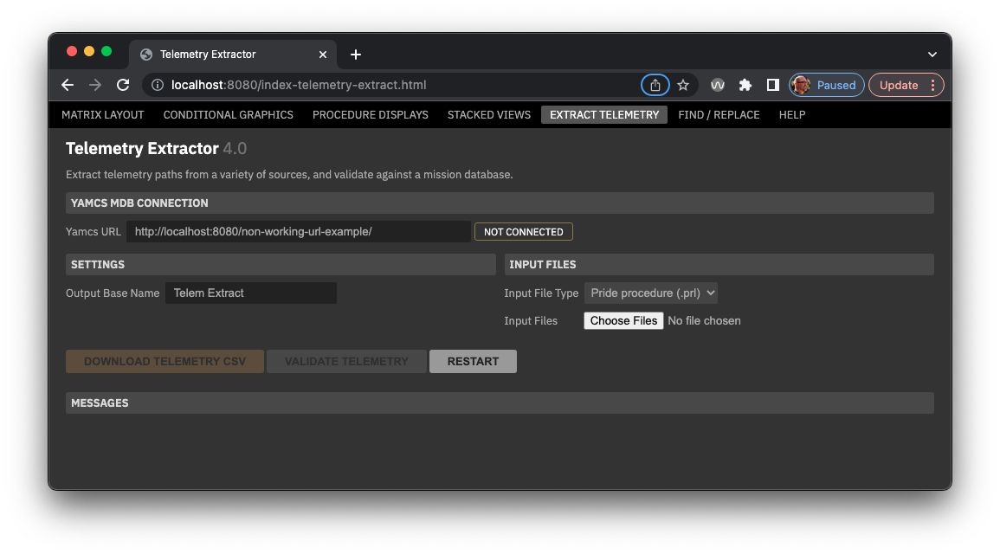
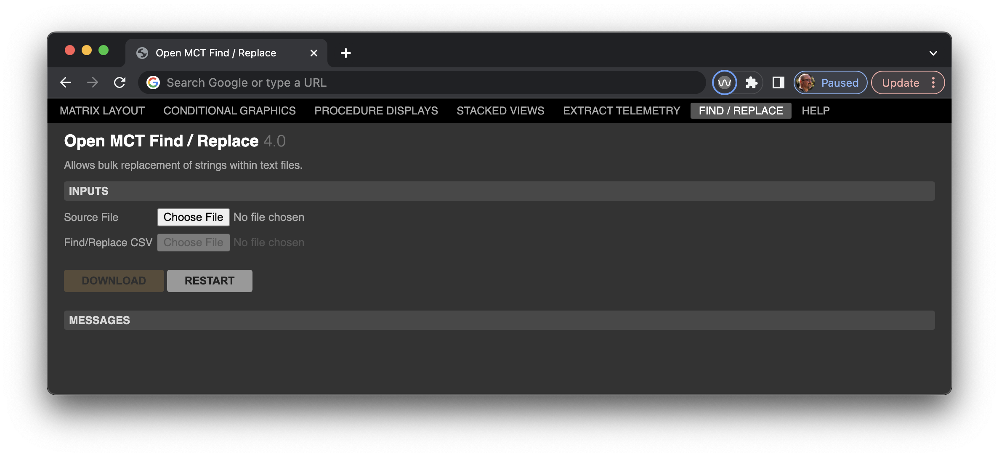
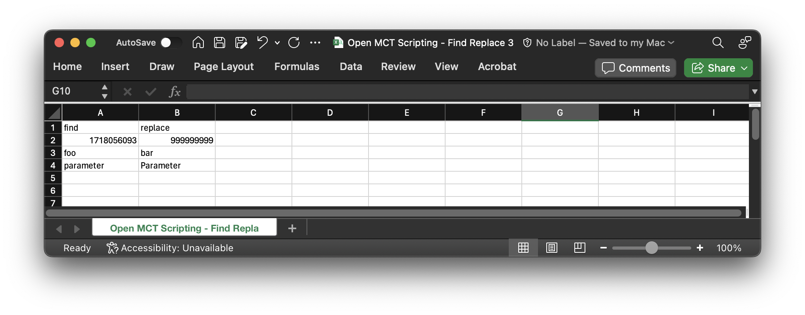

How to Use This Tool
Last updated: 10 Jun 2024
Contents
- Matrix Layout
- Conditional Graphics
- Procedure Displays
- Stacked Views
- Extract Telemetry
- Find / Replace Text
Overview
Allows large scale creation of a variety of Open MCT views, many with integrated Conditional styling. Source files include tabular CSV, PRIDE .prl files, and Python ground control scripts (GCS). The tool outputs JSON files that are imported into Open MCT.
- Create and/or gather input files.
- Run those inputs through this tool, which then outputs an Open MCT import-ready JSON file.
- Import that JSON file into Open MCT in the environment and location desired.
The tool also provides a capability to extract telemetry paths from GCS scripts and PRIDE PRL files into a CSV output.
Links
- Release notes and change history: Open MCT Scripting Tool Release Notes
- Online web tool: https://charlesh88.github.io/openmct-scripting/
- Code repo: https://github.com/charlesh88/openmct-scripting
Matrix Layout

What It Does
- Uses two input CSV files, one for telemetry and conditions and the other for layout and creates a
single
Display Layout as a result.
- The layout can display telemetry elements in the source file as alphanumerics or Condition Widgets, depending on the specification in the matrix layout CSV file.
- The matrix layout defines a grid with variable column widths and row heights.
- Elements can be statically and/or conditionally styled.
- Text elements can be added as labels; labels can span multiple columns.
- Creates Condition Sets for each specified row in the source file which are used by elements in the Display Layout.
- Folders that contain the above elements.
Interface

- Output Base Name: defines the base of names used to define output JSON files.
- Telemetry CSV Input: a CSV file that defines paths to telemetry parameters, properties and condition properties.
- Layout CSV: a CSV file that defines column widths, row heights, paths to telemetry parameters and text labels.
Matrix Layout Telemetry CSV Input File
This file defines the telemetry points and associated Condition Sets to be used in the matrix Display Layout. When the condition cells (condDefault, cond1, etc.) are populated for a row, a Condition Set will be created that incorporates and evaluates the telemetry parameter in column "dataSource".

| Column | Description | Example |
|---|---|---|
| name | Name of the parameter; used by generated Condition Widgets. See below for more. | |
| dataSource | Full path for the parameter using forward-slashes to denote containers and periods for aggregates, like: "/SpacecraftSystem/Subsystem/folder/aggregate.parameterName". Can be copied directly from Yamcs or other mission spec documents. | /Spacesystem/Subsystem/parameter_name.aggregate_name |
| alphaFormat | A printf string to be applied to numeric alphanumerics in a Display Layout. For example, "%.2f" will round a numeric parameter to two decimal points. | %.2f |
| alphaShowsUnit | Either TRUE or FALSE to indicate if alphanumerics should include units when they are available. | TRUE |
| alphaUsesCond | Either TRUE or FALSE to indicate if the resulting alphanumeric should use a Condition Set and conditional styling. If TRUE, then at least one condition must be specified; see below for more. | TRUE |
| condWidgetUsesOutputAsLabel | Either TRUE or FALSE to indicate if generated Condition Widgets should use a generated Condition Set output string as a label. For example, a switch state widget could spec conditions that output "ON" and "OFF" and setting this to TRUE would cause the widget to display that text when the relevant conditions are matched. Settiing to FALSE will use the "name" property specified in that column. | TRUE |
| alphaStyle | Optional static styling to be applied to this data source, in whatever form, it manifests in a Display Layout. Condition and style arguments are denoted in a JSON-like string, enclosed in curly braces - see below for more info. Note that any Conditional Styling will override this value. | {backgroundColor:#660000,color:#ffffff,border:1px solid #ff0000} |
| condDefault | Properties and styles for the Default condition in the row's Condition Set. Condition and style arguments are denoted in a JSON-like string, enclosed in curly braces - see below for more info.a | {output:--,border:1px solid #555555} |
| cond1 - cond10 | Styles and evaluation properties for up to ten Conditions in a Condition Set. Headers must be present for the extent of defined Conditions. e.g. if 99 of 100 rows only use two condition definitions, but a single row uses three conditions, the CSV must include headers for "cond1", "cond2" and "cond3". Condition and style arguments are denoted in a JSON-like string, enclosed in curly braces - see below for more info. | {output:ERROR,backgroundColor:#660000,color:#ffffff,border:1px solid #ff0000,operation:greaterThan,input:[100]} |
Style and Condition Arguments
Style and condition arguments are defined in a JSON-like string format, in this form: {
property:value,property:value,etc. } Note that both property names and values don't use quotes
around them.
| Argument Property | Description | Example |
|---|---|---|
| output | A string output by a matching condition in a Condition Set. | {output:ERROR} {output:Nominal} |
| operation | One entry from the set of available Operations; see "Condition Operation and Inputs" below for details. | {operation:greaterThan} {operation:textContains} |
| input | Inputs appropriate for the chosen operation. Values here must be enclosed in square brackets [ ], even when the input is a string. See "Condition Operation and Inputs" below for details. | {input:[-10,10]} {input:[foo]} |
| backgroundColor | A hex color value for the background of a stylable element, specified as a full hex value. | {backgroundColor:#660000} |
| color | A hex color value for the text color of a stylable element, specified as a full hex value. | {color:#cccccc} |
| border | A valid CSS property definition for a border of a stylable element. The color part must be specified as a full hex value. | {border:1px solid #ff0000} |
Style and Condition Examples
| Type | Description | Style / Condition String |
|---|---|---|
| All | Give an alphanumeric, text object or Condition Widget a dark red background, red border and white text. | {backgroundColor:#660000,border:1px solid #ff0000,color:#ffffff} |
| All | If the telemetry is present on the server, output the string "Defined" with a medium gray background and white foreground. | {output:Defined,backgroundColor:#666666,color:#ffffff,operation:isDefined} |
| Numeric | If the current float telemetry value is between than -0.1 and 0.2, output the string "Nominal" with an green background and white foreground. | {output:Nominal,backgroundColor:#368215,color:#ffffff,operation:between,input:[-0.1,0.2]} |
| Numeric | If the current float telemetry value is greater than 0.2, output the string "High" with an orange background, yellow border and white foreground. | {output:High,backgroundColor:#ff6600,color:#ffffff,border:1px solid #ffcc00,operation:greaterThan,input:[0.2]} | Enum | If the current enum parameter is "enabled", output the string "Enabled" with a green background and white foreground. | {output:Enabled,backgroundColor:#368215,color:#ffffff,operation:enumValueIs,input:[1]} |
Condition Operations and Inputs
| Telemetry Type | Operation | Description | Condition operation literals | Comparison input format | Example | Notes |
|---|---|---|---|---|---|---|
| All | Is Defined | Matches if the telemetry endpoint is present and available from Yamcs, even when it doesn't have a value. | isDefined, isUndefined | No comparison value | N/A | |
| All | Data older than | isStale | Number of milliseconds | 1500 | ||
| Float | Equality | Compares a current telemetry value to the Comparison value with equality. | equalTo | Single number | 100 | Note that Float and Integer telemetry types and comparisons are not compatible, i.e. a telem value of 0.000 will not match a comparison value of 0. Use Greater/less than comparisons in these cases. |
| Float | Greater/less than | greaterThan, lessThan, greaterThanOrEq, lessThanOrEq | Single number | 100 | ||
| Float | Between | between, notBetween | Two numbers separated by a comma | -100,100 | ||
| Enumeration | Enum value equality | enumValueIs, enumValueIsNot | Raw numeric of the enumeration, not the enumeration string | 1 | ||
| String | Contains | textContains, textDoesNotContain | Text | ooba | ||
| String | Starts/Ends | textStartsWith, textEndsWith, | Text | Foo | ||
| String | Equality | textIsExactly | Text | Foobar |
Escaping Text
The tool uses certain special characters (commas, tildes and backslashes) to separate arguments and define telemetry paths - these characters can't be used in text labels without being escaped. To use these characters for text, they must be escaped with a forward slash "\" as shown below.
| Character | Format | Example | Resulting Display |
|---|---|---|---|
| Comma | \, | STATE (A\, F == Arm\, Fire) | STATE (A, F == Arm, Fire) |
| Tilde | \~ | TEMP \~10 - 20 deg | TEMP ~10 - 20 deg |
| Backslash | \/ | Use \/Spacesystem\/Subsystem | Use /Spacesystem/Subsystem |
Matrix Layout "Layout" CSV Input File
The matrix layout defines a grid with variable column widths and row heights.

- Row 1 defines the width of columns in the grid, in layout grid units.
- Column A defines the height of each row in the grid, in layout grid units.
- Cell A1 contains 3 comma-separated values that control the grid dimensions and item margin:
- The first two values are the desired layout grid dimensions, which are the basis for grid units.
- The last value is the amount of margin between columns and rows, in grid units.
- For example, "1, 1, 4" will create a Display Layout with settings of grid X = 1, grid Y = 1, and 4 "grid units" of margin between columns and rows.
- If values are not provided in A1, the tool will use the default settings of 1, 1, 4.
- Cells can contain text, or a path to a telemetry parameter.
- Text cells can contain optional "flags"; see below for more.
- Cells that start with "/" or "~" will be treated as parameter paths.
- You can use "/" or "~" characters as text, but only if they are escaped. See "Escaping Text" above.
- Your telemetry file can include parameters that are not used by the layout file, but the converse is not true: parameters used in this file MUST be present in the telemetry CSV file used for a given matrix layout.
The resulting matrix layout output based on the CSV input above:
Using Optional Flags in the Layout CSV File
Both text and telemetry parameters accept certain "flag" arguments that allow additional capabilities and rendering options. More than one flag can be used at a time, separated with commas. Flags include:
| Capability | Flag | Telemetry | Text | Example | Notes |
|---|---|---|---|---|---|
| Span multiple columns | _span(#) | YES | YES | SYSTEMS,_span(3) | A text element with "SYSTEMS" will span across the designated number of columns, starting at the element's current column. |
| Span multiple rows | _rspan(#) | YES | YES | SYSTEMS,_rspan(2) | A text element with "SYSTEMS" will span across the designated number of rows, starting at the element's current row. |
| Render as Condition Widget | _cw | YES | /SpacecraftSystem/Subsystem/aggregate.parameterName,_cw | Renders a Condition Widget for this telemetry parameter. If this parameter is set to use Conditions in the telemetry CSV input file, then a Condition Set will be created using those parameters. | |
| Render as Hyperlink button | _link | YES | BUTTON LABEL,_link | A text element rendered as a Hyperlink button. Clicking the button will open the designated URL in a new browser tab. This element requires a _url() property, see below. Hyperlinks cannot be styled. | |
| URL property | _url(url) | YES | BUTTON LABEL,_cw,_url(https://someurl.com) | Both Condition Widgets and Hyperlink buttons can be provided a _url() parameter; this is required for Hyperlinks and optional for Condition Widgets. Note that Open MCT only accepts valid nasa.gov URLs. | |
| Style | _style({JSON string}) | YES | YES | BUTTON LABEL,_style({backgroundColor:#660000,color:#ffffff,border:1px solid #ff0000}) | A string of comma separated "property: value" elements as noted above. |
Source
- Telemetry CSV: Matrix Layout inputs Telemetry CSV example
- Matrix Layout CSV: Matrix Layout inputs Layout CSV example
Conditional Graphics
Generates one or more "image view" objects within a Display Layout. Image views can be conditionally styled to show a given image source when a condition in a Condition Set is matched. This example uses a sun angle telemetry parameter to display one of 23 different images of the "sun" graphic, overlaid on a base drawing of the rover, itself its own image view object.

What It Does
- Generates one or more "image view" objects within a single Display Layout.
- Source images must all be the same size for all image views in the layout.
- Image views color and border styling can be defined.
- Optionally generates one Condition Set.
- The number of conditions in the set is not limited.
- Each condition evaluates only one criteria.
- Data sources can be dictionary parameters or a Sine Wave Generator.
- If a generator is specified, the tool will create one or more generators as a result.
Interface

- Output Base Name: defines the base of names used to define output JSON files.
- Display Layout Grid: the X and Y grid dimensions to be used by generated Display
Layouts.
- Settings here are per pixel and define the scale of item widths and heights specified elsewhere. For example, using a grid of 2,2 would create a 2 x 2 grid in the layout. Items set to 200 width and 14 high would then be 400 pixels wide by 28 pixels high.
- Using smaller numbers here mean that items can be more tightly packed. Using a grid of 1,1 would make the grid equivalent to pixels.
- Image size in px: the pixel size (not grid units) desired for the resulting image view. All generated image views will be the same size in the Display Layout.
Input CSV file
Example input using telemetry paths as a data source:

| Column | Description | Example |
|---|---|---|
| imageViewName | The name of the image view object that will be created within the
layout.
|
|
| dataSource | A valid path to a telemetry source, a definition for a Sine Wave Generator or a name reference to a generator specced in a previous row. See notes below on Sine Wave Generators. | /Spacesystem/Subsystem/parameter_name.aggregate_name {"Scripted SWG": {"metadata": "sin", "period": 20, "amplitude": 180, "offset": 180, "dataRateInHz": 5,"randomness": 0}} |
| isDefault | Optional boolean if the condition for this row should be a default. If no default is specified, the Condition Set will create an unnamed default condition. | TRUE |
| operation | The condition operation to be performed for this row. See Defining Conditions in the Telemetry CSV above. | TRUE |
| input | Nothing, string, single number, or two numbers to be used as the condition operation evaluators. See Defining Conditions in the Telemetry CSV above. | 0,15 |
| name | The name of the condition that will be created for this row. | TRUE |
| output | The output string of the condition that will be created for this row. | |
| bgColor, fgColor, border | Style values for background color, text color and border style respectively. | #555555 1px solid #ff0000 |
| imageUrl | A full path to an image source file. | https://www.example.server/images/imagefilename.jpg |
Source
- Example using dictionary telemetry parameters: Sun Angle dictionary input example.csv
- Example that uses a generated Open MCT Sine Wave Generator: Sun Angle 3 SWG input.csv
Procedure Displays
What It Does
- Traverses multiple PRIDE procedure .prl files and creates Display Layout of alphanumeric parameter
values and Stacked Plots for each.
- Parameters are grouped into their steps and labeled as such.
- Each parameter is included as an alphanumeric with a label derived from the procedure file.
- Widths of alphanumerics can be directly set; the width of labels is automatically calculated.
- IMPORTANT NOTE: only fully qualified paths (e.g. '/SpacecraftSystem/Subsystem/etc.') in procedures can be found and extracted; references without in descriptive text may not be found.
- A Tabs View that contains all the generated Display Layouts.
- A Stacked Plot per procedure with parameters used.
- Folders that contain the above elements.
Interface

- Output Base Name: defines the base of names used to define output JSON files.
- Display Layout Grid: the X and Y grid dimensions to be used by generated Display
Layouts.
- Settings here are per pixel and define the scale of item widths and heights specified elsewhere. For example, using a grid of 2,2 would create a 2 x 2 grid in the layout. Items set to 200 width and 14 high would then be 400 pixels wide by 28 pixels high.
- Using smaller numbers here mean that items can be more tightly packed. Using a grid of 1,1 would make the grid equivalent to pixels.
- Item Margin: a single grid unit number that controls the amount of horizontal and vertical space between items in the Display Layout. Using "1" with grid set to 2,2 would create a 2 x 2 pixel space between labels and elements.
- Alphanumeric Width: controls the width of alphanumeric elements in the layout.
- Row Height: controls the height of text-plus-alphanumeric pairs in the layout.
Stacked Views
What It Does
- Takes in multiple telemetry source files and creates both a Stacked Plot and a Flexible Layout for each.
- The source file can group telemetry parameters into Overlay Plots, which become elements within the
Stacked Plots and Flexible Layouts.
- Overlay Plots of the same name will be created once, and shared amongst multiple Stacked Plots and Flexible Layouts.
- Telemetry parameters can specify some properties like the display of limit lines, marker size and shape, and line interpolation style.
- Folders that contain the above elements.
Interface

- Output Base Name: defines the base of names used to define output JSON files.
Example Source
- Example that creates 3 overlay plots in a Stacked View: Stacked View example 1 .csv
Extract Telemetry
What It Does
- Takes in multiple source files and creates CSV file outputs that list parameters, their usage and optionally if they validated against a Yamcs database.
- Allows validation of extracted parameters if a valid Yamcs web api server connection is available.
- IMPORTANT NOTE: only fully qualified paths (e.g. '/SpacecraftSystem/Subsystem/etc.') in PRIDE procedure files can be found and extracted; references without in descriptive text may not be found.
Interface

- Yamcs URL allows the entry of a valid "Get Parameter" Yamcs web api URL to allow validation of extracted telemetry parameters against the mission database. When a valid URL is entered and a good connection to a Yamcs is available, the indicator to the right of the input will display "Connected", and the "Validate Telemetry" button will be enabled once telemetry has been extracted. A Yamcs connection is not required in order to extract telemetry, only to validate it.
- Output Base Name: defines the base of names used to define output JSON files.
- Input File Type: choose either GCS Python scripts (.py) or PRIDE procedure (.prl).
- Choose Files allows you to select one or more of .prl or .py files to use.
- Download Telemetry CSV downloads the resulting output CSV.
- Validate Telemetry If a valid Yamcs URL is entered and the connection is good, this button will enable after files have been selected. Click again to validate extracted parameters.
Find / Replace
What It Does
- Allows bulk find and replace of strings in any valid text file, such as .txt, .json, .js, .py, etc. Takes in a single source file and a CVS table file of search / replace pairs.
Interface

- Source file uploads a source text file.
- Find/Replace CSV uploads a two-column CSV file of values to search for and replace in the source file.
- Download the resulting replaced text as a file.
Find / Replace CSV input file

- The file must have a header row, but the names of the columns are not important.
- Values in the first column will be searched for in the source file and replaced with those in the second column, same row.